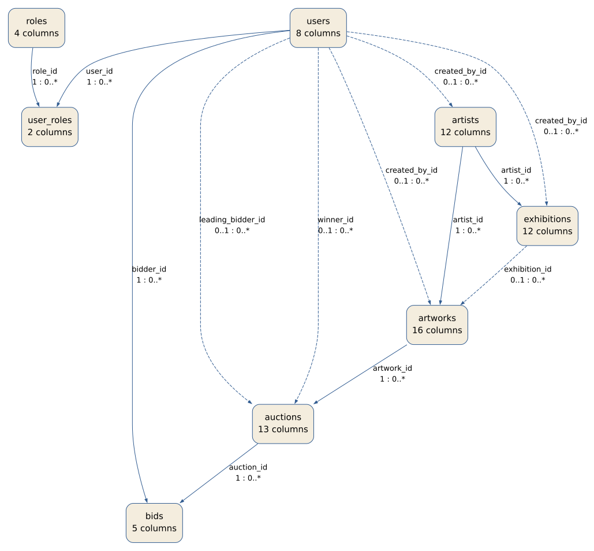

Complete schema dictionary, relationships and integrity rules for the Spring Boot + Angular art gallery.
Flyway migrations define the physical database. JPA mappings explain object navigation. Service rules are identified separately so they cannot be mistaken for SQL constraints.
Eight application tables in MySQL / InnoDB. Flyway also maintains its own migration-history table; that infrastructure table is outside this application dictionary.

Every foreign key appears here. The complete names, optional links and deletion actions are tabulated on page 12. The full editable SVG accompanies this document.
user_roles joins each user to any number of roles and each role to any number of users. Its composite primary key prevents duplicate assignments. User.roles is mapped with @ManyToMany.
The CDC Client maps to Artist; Projet maps to Exhibition. Artist.exhibitions uses @OneToMany(mappedBy="artist"). Exhibition.artist uses @ManyToOne(optional=false); its SQL foreign key is NOT NULL.
An artist may initially have no exhibition, then many. Each exhibition has exactly one artist. The CDC wording does not require a newly created artist to already have a project.
DatabaseRelationshipsIT flushes and clears the persistence context, then verifies shared roles, several roles per user, and two exhibitions for one artist through both JPA navigation directions.
Role catalogue
| Column | SQL type | NULL | Default / identity | Key |
|---|---|---|---|---|
| id | BIGINT | NO | AUTO_INCREMENT | PK |
| libelle | VARCHAR(32) | NO | - | UQ |
| profile | VARCHAR(32) | NO | - | - |
| system_key | VARCHAR(32) | YES | - | UQ |
PRIMARY KEY (id) CONSTRAINT uk_roles_libelle UNIQUE (libelle) CONSTRAINT uk_roles_system_key UNIQUE (system_key)
Explicit secondary indexes: None. PK, unique and FK supporting indexes are described on page 14.
Accounts and identity
| Column | SQL type | NULL | Default / identity | Key |
|---|---|---|---|---|
| id | BIGINT | NO | AUTO_INCREMENT | PK |
| first_name | VARCHAR(80) | NO | - | - |
| last_name | VARCHAR(80) | NO | - | - |
| VARCHAR(190) | NO | - | UQ | |
| password | VARCHAR(100) | NO | - | - |
| phone | VARCHAR(30) | YES | - | - |
| enabled | BOOLEAN | NO | TRUE | - |
| created_at | TIMESTAMP(6) | NO | CURRENT_TIMESTAMP(6) | - |
PRIMARY KEY (id) CONSTRAINT uk_users_email UNIQUE (email)
Explicit secondary indexes: None. PK, unique and FK supporting indexes are described on page 14.
Many-to-many association
| Column | SQL type | NULL | Default / identity | Key |
|---|---|---|---|---|
| user_id | BIGINT | NO | - | PK + FK |
| role_id | BIGINT | NO | - | PK + FK |
PRIMARY KEY (user_id, role_id) CONSTRAINT fk_user_roles_user FOREIGN KEY (user_id) REFERENCES users (id) ON DELETE CASCADE CONSTRAINT fk_user_roles_role FOREIGN KEY (role_id) REFERENCES roles (id)
Explicit secondary indexes: None. PK, unique and FK supporting indexes are described on page 14.
CDC Client equivalent
| Column | SQL type | NULL | Default / identity | Key |
|---|---|---|---|---|
| id | BIGINT | NO | AUTO_INCREMENT | PK |
| name | VARCHAR(120) | NO | - | - |
| VARCHAR(190) | NO | - | - | |
| phone | VARCHAR(30) | YES | - | - |
| address | VARCHAR(255) | YES | - | - |
| country | VARCHAR(80) | YES | - | - |
| biography | VARCHAR(4000) | YES | - | - |
| photo_url | VARCHAR(500) | YES | - | - |
| active | BOOLEAN | NO | TRUE | - |
| created_by_id | BIGINT | YES | - | FK |
| created_at | TIMESTAMP(6) | NO | CURRENT_TIMESTAMP(6) | - |
| version | BIGINT | NO | 0 | - |
PRIMARY KEY (id) CONSTRAINT fk_artists_created_by FOREIGN KEY (created_by_id) REFERENCES users (id) ON DELETE SET NULL
Explicit secondary indexes: idx_artists_name (name)
CDC Projet equivalent
| Column | SQL type | NULL | Default / identity | Key |
|---|---|---|---|---|
| id | BIGINT | NO | AUTO_INCREMENT | PK |
| title | VARCHAR(160) | NO | - | - |
| description | VARCHAR(4000) | YES | - | - |
| budget | DECIMAL(14, 2) | NO | - | - |
| duration_days | INT | NO | - | - |
| starts_on | DATE | YES | - | - |
| venue | VARCHAR(160) | YES | - | - |
| cover_url | VARCHAR(500) | YES | - | - |
| artist_id | BIGINT | NO | - | FK |
| created_by_id | BIGINT | YES | - | FK |
| created_at | TIMESTAMP(6) | NO | CURRENT_TIMESTAMP(6) | - |
| version | BIGINT | NO | 0 | - |
PRIMARY KEY (id) CONSTRAINT fk_exhibitions_artist FOREIGN KEY (artist_id) REFERENCES artists (id) CONSTRAINT fk_exhibitions_created_by FOREIGN KEY (created_by_id) REFERENCES users (id) ON DELETE SET NULL CONSTRAINT ck_exhibitions_budget CHECK (budget >= 0) CONSTRAINT ck_exhibitions_duration CHECK (duration_days > 0)
Explicit secondary indexes: None. PK, unique and FK supporting indexes are described on page 14.
Gallery catalogue extension
| Column | SQL type | NULL | Default / identity | Key |
|---|---|---|---|---|
| id | BIGINT | NO | AUTO_INCREMENT | PK |
| slug | VARCHAR(180) | NO | - | UQ |
| title | VARCHAR(160) | NO | - | - |
| description | VARCHAR(4000) | YES | - | - |
| year_created | INT | YES | - | - |
| medium | VARCHAR(120) | YES | - | - |
| dimensions | VARCHAR(80) | YES | - | - |
| image_url | VARCHAR(500) | NO | - | - |
| image_credit | VARCHAR(255) | YES | - | - |
| estimate | DECIMAL(14, 2) | YES | - | - |
| status | VARCHAR(16) | NO | 'PUBLISHED' | - |
| artist_id | BIGINT | NO | - | FK |
| exhibition_id | BIGINT | YES | - | FK |
| created_by_id | BIGINT | YES | - | FK |
| created_at | TIMESTAMP(6) | NO | CURRENT_TIMESTAMP(6) | - |
| version | BIGINT | NO | 0 | - |
PRIMARY KEY (id) CONSTRAINT uk_artworks_slug UNIQUE (slug) CONSTRAINT fk_artworks_artist FOREIGN KEY (artist_id) REFERENCES artists (id) CONSTRAINT fk_artworks_exhibition FOREIGN KEY (exhibition_id) REFERENCES exhibitions (id) ON DELETE SET NULL CONSTRAINT fk_artworks_created_by FOREIGN KEY (created_by_id) REFERENCES users (id) ON DELETE SET NULL
Explicit secondary indexes: idx_artworks_status (status)
Timed auction extension
| Column | SQL type | NULL | Default / identity | Key |
|---|---|---|---|---|
| id | BIGINT | NO | AUTO_INCREMENT | PK |
| artwork_id | BIGINT | NO | - | FK |
| starting_price | DECIMAL(14, 2) | NO | - | - |
| current_price | DECIMAL(14, 2) | NO | - | - |
| minimum_increment | DECIMAL(14, 2) | NO | - | - |
| starts_at | TIMESTAMP(6) | NO | - | - |
| ends_at | TIMESTAMP(6) | NO | - | - |
| status | VARCHAR(16) | NO | - | - |
| bid_count | INT | NO | 0 | - |
| leading_bidder_id | BIGINT | YES | - | FK |
| winner_id | BIGINT | YES | - | FK |
| created_at | TIMESTAMP(6) | NO | CURRENT_TIMESTAMP(6) | - |
| version | BIGINT | NO | 0 | - |
PRIMARY KEY (id) CONSTRAINT fk_auctions_artwork FOREIGN KEY (artwork_id) REFERENCES artworks (id) CONSTRAINT fk_auctions_leader FOREIGN KEY (leading_bidder_id) REFERENCES users (id) CONSTRAINT fk_auctions_winner FOREIGN KEY (winner_id) REFERENCES users (id) CONSTRAINT ck_auctions_prices CHECK (starting_price > 0 AND minimum_increment > 0 AND current_price >= starting_price) CONSTRAINT ck_auctions_window CHECK (ends_at > starts_at)
Explicit secondary indexes: idx_auctions_status_ends (status, ends_at); idx_auctions_artwork (artwork_id)
Accepted bid ledger
| Column | SQL type | NULL | Default / identity | Key |
|---|---|---|---|---|
| id | BIGINT | NO | AUTO_INCREMENT | PK |
| auction_id | BIGINT | NO | - | FK |
| bidder_id | BIGINT | NO | - | FK |
| amount | DECIMAL(14, 2) | NO | - | - |
| created_at | TIMESTAMP(6) | NO | - | - |
PRIMARY KEY (id) CONSTRAINT fk_bids_auction FOREIGN KEY (auction_id) REFERENCES auctions (id) ON DELETE CASCADE CONSTRAINT fk_bids_bidder FOREIGN KEY (bidder_id) REFERENCES users (id) CONSTRAINT uk_bids_auction_amount UNIQUE (auction_id, amount)
Explicit secondary indexes: idx_bids_bidder (bidder_id, created_at)
| Constraint | Referencing column | Parent | Parent / child | ON DELETE |
|---|---|---|---|---|
| fk_user_roles_user | user_roles.user_id | users.id | 1 | CASCADE |
| fk_user_roles_role | user_roles.role_id | roles.id | 1 | RESTRICT |
| fk_artists_created_by | artists.created_by_id | users.id | 0..1 | SET NULL |
| fk_exhibitions_artist | exhibitions.artist_id | artists.id | 1 | RESTRICT |
| fk_exhibitions_created_by | exhibitions.created_by_id | users.id | 0..1 | SET NULL |
| fk_artworks_artist | artworks.artist_id | artists.id | 1 | RESTRICT |
| fk_artworks_exhibition | artworks.exhibition_id | exhibitions.id | 0..1 | SET NULL |
| fk_artworks_created_by | artworks.created_by_id | users.id | 0..1 | SET NULL |
| fk_auctions_artwork | auctions.artwork_id | artworks.id | 1 | RESTRICT |
| fk_auctions_leader | auctions.leading_bidder_id | users.id | 0..1 | RESTRICT |
| fk_auctions_winner | auctions.winner_id | users.id | 0..1 | RESTRICT |
| fk_bids_auction | bids.auction_id | auctions.id | 1 | CASCADE |
| fk_bids_bidder | bids.bidder_id | users.id | 1 | RESTRICT |
For every row above, a parent can have 0..many children. A mandatory FK means each child needs one parent, not that every parent needs a child.
CASCADE: users → user_roles; auctions → bids. SET NULL: users → artists / exhibitions / artworks (creator); exhibitions → artworks. Other links restrict deletion while references exist.
All eight tables have a primary key. Seven use a BIGINT AUTO_INCREMENT id; user_roles uses (user_id, role_id). Five named unique constraints complement them.
| Table | Unique constraint |
|---|---|
| roles | CONSTRAINT uk_roles_libelle UNIQUE (libelle) |
| users | CONSTRAINT uk_users_email UNIQUE (email) |
| artworks | CONSTRAINT uk_artworks_slug UNIQUE (slug) |
| bids | CONSTRAINT uk_bids_auction_amount UNIQUE (auction_id, amount) |
| roles | CONSTRAINT uk_roles_system_key UNIQUE (system_key) |
| Table | Expression |
|---|---|
| exhibitions | CONSTRAINT ck_exhibitions_budget CHECK (budget >= 0) |
| exhibitions | CONSTRAINT ck_exhibitions_duration CHECK (duration_days > 0) |
| auctions | CONSTRAINT ck_auctions_prices CHECK (starting_price > 0 AND minimum_increment > 0 AND current_price >= starting_price) |
| auctions | CONSTRAINT ck_auctions_window CHECK (ends_at > starts_at) |
DTO validation and service methods enforce form validation, authorizations, role assignment, artist/exhibition consistency, auction transitions and bid increments. Auction bidding uses pessimistic row locking; version columns on catalogue records and auctions support optimistic locking.
| Index | Table | Ordered columns |
|---|---|---|
| idx_artists_name | artists | name |
| idx_artworks_status | artworks | status |
| idx_auctions_status_ends | auctions | status, ends_at |
| idx_auctions_artwork | auctions | artwork_id |
| idx_bids_bidder | bids | bidder_id, created_at |
InnoDB creates an index for each primary key and each unique constraint. The leftmost prefix of user_roles(user_id, role_id) supports its user FK; uk_bids_auction_amount(auction_id, amount) supports its auction FK. idx_bids_bidder supports bidder_id; idx_auctions_artwork supports artwork_id.
InnoDB creates supporting indexes when no suitable index already exists. Below are expected names from a fresh migration, inferred from the DDL; inspect SHOW INDEX for actual runtime names if the schema has evolved.
| Table | Leading column | Expected FK index name |
|---|---|---|
| user_roles | role_id | fk_user_roles_role |
| artists | created_by_id | fk_artists_created_by |
| exhibitions | artist_id | fk_exhibitions_artist |
| exhibitions | created_by_id | fk_exhibitions_created_by |
| artworks | artist_id | fk_artworks_artist |
| artworks | exhibition_id | fk_artworks_exhibition |
| artworks | created_by_id | fk_artworks_created_by |
| auctions | leading_bidder_id | fk_auctions_leader |
| auctions | winner_id | fk_auctions_winner |
| Evidence | Result |
|---|---|
| Backend unit tests | 8 passed; no failures or skips |
| MySQL integration tests | 140 passed; no failures or skips |
| Relationship persistence tests | 2 DatabaseRelationshipsIT cases included above |
| Frontend tests | 64 passed across 10 files |
| Postman / Newman | 103 requests; 175 assertions; zero failures |
| Production container | Java 17 image with Angular in psm.jar; locally exercised |
| Remote VPS | Pending: no live VPS evidence |
python3 docs/database/generate.py node docs/database/render.mjs
Editable HTML: docs/database/database.html. Generator: generate.py. Print renderer: render.mjs. Supporting artifacts: schema.json and relationships.dot / .svg. The generator also refreshes docs/DATABASE.md.